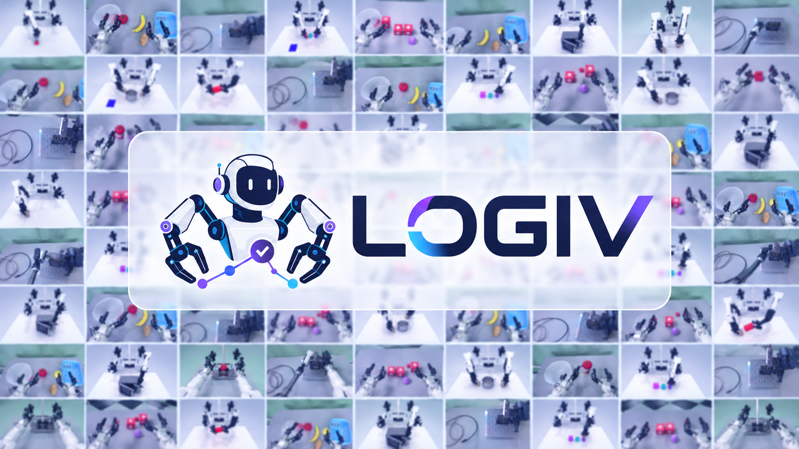
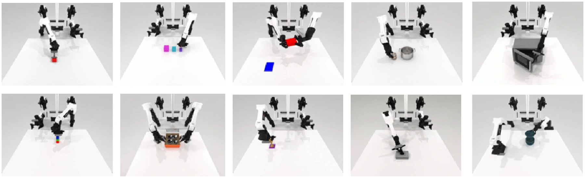

Explore LOGIVLOGIV · Long-horizon robot execution
Graph Engineering
for Agentic Robots
LOGIV: Graph-Verified Execution with Causal Local Repair
for Long-Horizon Robot Tasks
1 CUHKSZ2 A*STAR3 Caltech4 NUS5 HKUST6 COCO Matrix7 NTU
Keep the plan grounded.
Repair what the future depends on.
Engineer the task dependencies. Close the robot execution loop.
Plan, act, verify, and repair above existing VLA and WAM policies.
Simulation gains: mean across three backbones, without injected disturbances. Real robots: three tasks, ten trials each.
From graphs to physical action
Three tasks. Real robots.
Pick tomato
Astribot S1 13 s
Build blocks
Astribot S1 17 s
Insert cable
AgileX Piper 25 s
Videos illustrate the tasks; reported success rates are measured over all trials.
The insight
An action can finish.
Its effects can still disappear.
A long-horizon plan depends on conditions that must remain true—not simply on a record of completed actions.
Graph Engineering makes dependencies executable.
A robot places a support and moves on. If that support is displaced, the remaining bridge-building plan is no longer physically valid, even though the earlier action succeeded.
LOGIV makes this dependency explicit. It checks which conditions still hold, traces the downstream effects of a failure, and restores the support needed by the unfinished plan.
Verify the conditions that connect actions,
then repair the broken causal support.
Graph Engineering × Agentic Robots
Engineered dependencies.
An agentic execution loop.
LOGIV uses the task graph as the interface between reasoning and action.
No additional trainable components.
The representation
Graph Engineering
Compile a validated plan into explicit condition-support and resource-ordering edges. Check their physical validity and trace which future actions depend on a failed condition.
The behavior
Agentic Robots
Plan toward a goal, execute through a robot policy, verify the observed world, and repair the continuation when dependencies break. Validate the repair before acting again.
- 01
Build the graph
Validate a symbolic plan, then encode condition-support and resource-ordering edges.
- 02
Check the world
Use visual observations and executor feedback to verify states, actions, and dependencies.
- 03
Trace the failure
Identify invalidated support and the actions it affects. Retain usable unfinished actions.
- 04
Validate the repair
Plan a local repair, validate the combined continuation, and rebuild the graph before resuming.
π0.5 · AHA-WAM · Light-WAM
Fast Downward + VAL
The evidence
More completed tasks.
Across policies and environments.
20 dual-arm tasks across RoboTwin V2 and BiCoord,
evaluated with three execution backbones.
Task success without injected disturbances
Each value is a task success rate (%). Gains are percentage points, averaged across the three backbones.
Full comparison with adapted recovery baselines
| Backbone | Method | RoboTwin V2 | BiCoord | ||||
|---|---|---|---|---|---|---|---|
| C | P | R | C | P | R | ||

Beyond simulation
From 12 to 17
successful real-robot trials.
LOGIV improves the observed aggregate completion rate from 40.0% to 56.7% with π0.5.
Ten trials per task. These findings are limited to the evaluated tasks, disturbances, and trial counts.
| Task | π0.5 | + LOGIV |
|---|---|---|
| Pick tomato | 7 / 10 | 9 / 10 |
| Build blocks | 3 / 10 | 5 / 10 |
| Insert cable | 2 / 10 | 3 / 10 |
| Overall | 12 / 30 | 17 / 30 |
In the paper
Abstract
Agentic robots must turn a high-level goal into actions while keeping the physical conditions needed for future steps valid. A completed action does not ensure that its effects will persist: a later disturbance can invalidate support that the remaining plan still assumes. We present LOGIV, a graph engineering framework for agentic robot execution that uses an explicit task graph to connect symbolic planning, observation-based verification, and embodied action. LOGIV compiles a validated plan into condition-support and resource-ordering edges, checks their physical validity during execution, and uses dependency tracing to determine what must be restored after a failure. Repair is constrained by retained unfinished actions, and the combined continuation is symbolically validated before execution resumes. The framework operates above existing Vision-Language-Action (VLA) and World Action Model (WAM) policies without adding trainable components. Across 20 dual-arm tasks from RoboTwin V2 and BiCoord with three execution backbones, LOGIV improves mean task success without injected disturbances by 10.67 and 15.33 percentage points, respectively. Under predefined perturbations, it achieves higher task completion and condition restoration than three adapted recovery baselines for every backbone on both benchmarks. On three real-robot tasks, successful trials increase from 12/30 to 17/30. These results support explicit, continuously checked task dependencies as a practical interface for reliable agentic robot execution.
Read the full paper ↗A closer look
Questions about LOGIV
What makes LOGIV an agentic robotics framework?
It closes a planning–execution–verification–repair loop. The system reasons about the conditions needed for future actions, observes whether they remain valid, and updates its continuation after failure. Its autonomy is bounded by the symbolic task model, available observations, execution policies, and budget.
Does LOGIV train a new robot policy?
No. LOGIV operates above existing VLA and WAM policies. It adds symbolic task-graph construction, runtime verification, and local plan repair without adding trainable components.
Why use local repair instead of replanning everything?
Usable unfinished actions constrain the repair. By restoring the support they need and validating the combined continuation, LOGIV can avoid repeating valid work. In the reported ablation, replanning all remaining actions increases repeated valid actions from 0.2 to 1.6.
What is available in the code release?
The repository includes a LOGIV core reconstructed from the paper, integration layers for RoboTwin and BiCoord, and two example PDDL/prompt bundles. Complete experimental reproduction additionally requires the original task models, full prompts, policy weights, layouts, perturbation schedules, and budgets. See the repository's validation scope.
Get in touch
Contact the team
For research questions and collaboration.